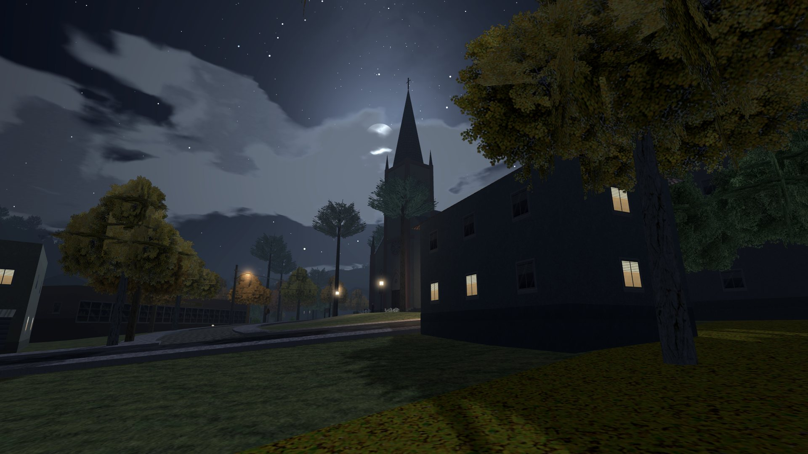

Gallery
Screenshots
All taken from the game itself, no retouching. Click to enlarge.
Now see it up close
The pavilion lights come on every evening, festival or no festival.
▶ Play now Free · in your browser
Gallery
All taken from the game itself, no retouching. Click to enlarge.
The pavilion lights come on every evening, festival or no festival.
▶ Play now Free · in your browser